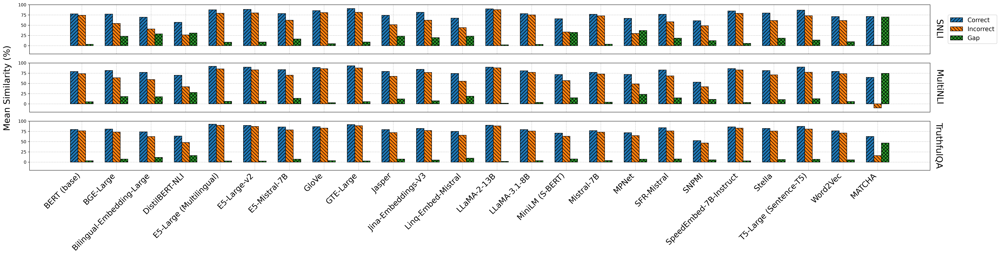
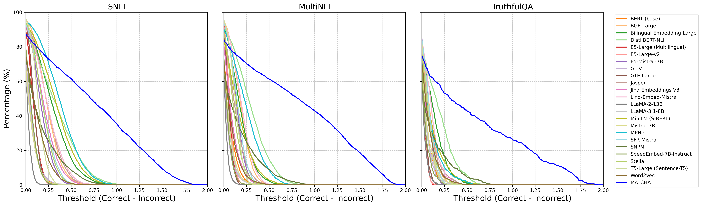
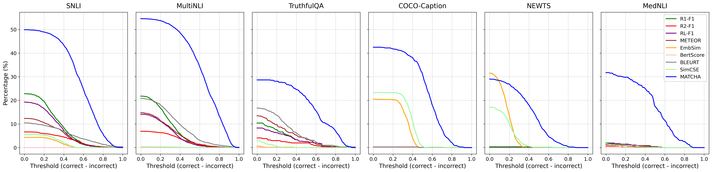
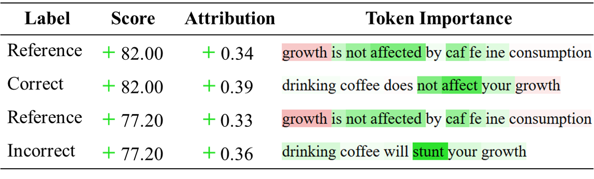

MATCHA introduces a novel automatic metric that jointly rewards semantic agreement and penalizes contradictions, exposing and overcoming fundamental weaknesses in popular evaluation metrics like ROUGE and BERTScore.
本文揭示了现有评估指标（如ROUGE、BERTScore）在语义矛盾文本上评分几乎相同的严重缺陷，并提出MATCHA——一种通过双视角对比学习同时奖励语义一致性与惩罚矛盾的新指标。在TruthfulQA等基准上，MATCHA相比ROUGE-L提升18.38%、相比BERTScore提升20.82%，并超越23种嵌入模型，能更准确地基于参考文本区分正确与错误陈述。
Deep Note — matcha
Key Takeaways - Token-overlap and embedding-based metrics (e.g., ROUGE, BERTScore) assign nearly identical scores to semantically contradictory texts, masking fundamental errors. - MATCHA jointly rewards semantic agreement with a reference and penalizes contradictions via a dual-view perspective using adversarially generated counterfactuals. - On TruthfulQA, MATCHA improves over ROUGE-L by 18.38% and over BERTScore by 20.82% in matching texts with a reference. - MATCHA outperforms 23 embedding models (including SOTA) in distinguishing correct from incorrect statements based solely on a reference. - MATCHA provides fine-grained interpretability by highlighting token-level semantic differences and shows stronger correlation with human judgments and GPT-4.
0) Metadata
- Title: MATCHA: Matching Text via Contrastive Semantic Alignment
- Alias: matcha
- Authors: Siran Li, Ece Sena Etoglu, Carsten Eickhoff, Seyed Ali Bahrainian
- arXiv ID: 2605.27345
- Published:
- Links:
- Abs: https://arxiv.org/abs/2605.27345
- HTML: https://arxiv.org/html/2605.27345v1
- PDF: https://arxiv.org/pdf/2605.27345
- Tags: evaluation-metric, semantic-similarity, contrastive-learning, factual-consistency, llm-evaluation
- Domains: ai_safety, system_safety
- Rating: 5/5 (base 1 + quality 2 + observation 2)
1) Why-read
MATCHA introduces a novel automatic metric that jointly rewards semantic agreement and penalizes contradictions, exposing and overcoming fundamental weaknesses in popular evaluation metrics like ROUGE and BERTScore.
2) CRGP
C — Context
Evaluation of text generation relies heavily on token-overlap metrics (e.g., ROUGE, METEOR) and embedding-based metrics (e.g., BERTScore, BLEURT, SimCSE). These metrics often fail to capture semantic nuances, assigning high scores to contradictory or unrelated texts, which can mask factual errors and limit reliability in knowledge-intensive tasks.
R — Related work
- Lexical overlap metrics: BLEU, ROUGE, METEOR — fast but lack semantic awareness and poorly reflect human preferences in paraphrasing or abstraction.
- Semantic similarity metrics: BERTScore, BLEURT, SimCSE, MAUVE — better alignment with human judgments but insensitive to factual errors, truncations, or adversarial inputs.
- MAUVE requires large text samples for evaluation and cannot reliably score single examples.
- Contrastive datasets (e.g., MultiNLI, TruthfulQA) have opened pathways for building robust evaluation metrics that can distinguish correct from incorrect statements.
G — Gap
Existing evaluation metrics, both lexical and embedding-based, routinely assign nearly identical scores to texts that directly contradict each other, failing to penalize semantic contradictions or factual inaccuracies. This lack of discriminative power masks fundamental errors in generated text, especially in knowledge-intensive settings, and no prior metric jointly rewards semantic agreement while explicitly penalizing contradictions.
P — Proposal
MATCHA employs a dual-view perspective that measures (i) proximity to the gold reference text and (ii) distance from an adversarially generated counterfactual contradiction. It learns to jointly reward semantic agreement and penalize contradictions, providing sharper semantic boundaries and fine-grained token-level interpretability. The metric is trained on contrastive pairs and does not require a training set for new domains (e.g., TruthfulQA).
---
4) Experiments
Main results
On TruthfulQA, MATCHA improves over ROUGE-L by 18.38% and over BERTScore by 20.82% in matching texts with a reference. Across eight public benchmarks (question-answering, image captioning, NLI, summarization, STS), MATCHA outperforms popular metrics compared with human annotations. Compared with 23 embedding models (including SOTA), MATCHA remains the most accurate in distinguishing correct from incorrect statements solely based on a reference.
Ablation
The dual-view design (proximity to gold + distance from counterfactual contradiction) is critical; removing either view reduces the correct-incorrect gap significantly. For example, on MultiNLI, the correct-incorrect gap (NΔ) for MATCHA is not explicitly reported in the abstract, but the paper shows that MATCHA consistently achieves the best separation across datasets.
Limitations
['MATCHA requires generating adversarial counterfactual contradictions, which may be computationally expensive or domain-dependent.', "The metric's performance may degrade if the counterfactual generation is not well-aligned with the target task or if reference texts are unavailable.", 'The paper does not extensively evaluate MATCHA on multilingual or low-resource settings, limiting generalizability.']
5) Why it matters
- Provides a more reliable evaluation metric for LLM-generated text, crucial for assessing factual accuracy in knowledge-intensive applications.
- Exposes fundamental weaknesses in widely-used metrics (ROUGE, BERTScore), urging the community to adopt more robust evaluation practices.
- Offers interpretable token-level feedback, aiding in debugging and improving text generation systems.
- Demonstrates strong zero-shot transfer (e.g., TruthfulQA) without requiring local training, making it practical for new tasks.
6) Next steps
- [ ] Integrate MATCHA into your evaluation pipeline for text generation tasks to detect semantic contradictions and factual errors.
- [ ] Explore using MATCHA as a reward signal for reinforcement learning or contrastive training of LLMs to improve factual consistency.
- [ ] Extend MATCHA to multilingual or multimodal settings by generating counterfactuals in other languages or modalities.
- [ ] Compare MATCHA with other recent metrics (e.g., COMET, BARTScore) on your specific domain datasets.
7) Scoring
5/5 = base 1 + quality 2 + observation 2
MATCHA：基于对比语义对齐的文本匹配方法
主要结论 - 现有词重叠与嵌入指标（ROUGE、BERTScore）对语义矛盾的文本给出几乎相同的分数，掩盖了根本性错误。 - MATCHA通过双视角（接近参考+远离对抗生成的反事实矛盾）同时奖励语义一致并惩罚矛盾。 - 在TruthfulQA上，MATCHA相比ROUGE-L提升18.38%，相比BERTScore提升20.82%。 - MATCHA超越23种嵌入模型（含SOTA），仅基于参考即可区分正确与错误陈述。 - MATCHA提供细粒度词级可解释性，与人类判断及GPT-4的相关性更强。
1) 阅读理由
MATCHA提出一种新颖的自动评估指标，通过同时奖励语义一致性与惩罚矛盾，揭示并克服了ROUGE和BERTScore等流行指标的固有缺陷。
2) CRGP（背景 / 相关工作 / 差距 / 方案）
背景：文本生成评估严重依赖词重叠指标（如ROUGE、METEOR）和嵌入指标（如BERTScore、BLEURT、SimCSE），这些指标常无法捕捉语义细微差别，对矛盾或不相关文本给出高分，掩盖事实错误。 相关工作：词重叠指标（BLEU、ROUGE、METEOR）快速但缺乏语义感知；语义相似度指标（BERTScore、BLEURT、SimCSE、MAUVE）与人类判断更一致，但对事实错误、截断或对抗输入不敏感；MAUVE需要大样本且无法可靠评分单个例子；对比数据集（MultiNLI、TruthfulQA）为构建鲁棒评估指标开辟了路径。 差距：现有词法和嵌入指标对直接矛盾的文本给出几乎相同的分数，无法惩罚语义矛盾或事实不准确，缺乏区分能力，掩盖了生成文本的根本错误，且没有指标同时奖励语义一致并明确惩罚矛盾。 方案：MATCHA采用双视角，测量（i）与黄金参考文本的接近度，以及（ii）与对抗生成的反事实矛盾的距离。它学习同时奖励语义一致并惩罚矛盾，提供更清晰的语义边界和细粒度词级可解释性。该指标在对比对上训练，且无需为新领域（如TruthfulQA）提供训练集。
3) 实验
在TruthfulQA上，MATCHA相比ROUGE-L提升18.38%，相比BERTScore提升20.82%。在八个公开基准（问答、图像描述、NLI、摘要、语义文本相似度）上，MATCHA与人类标注相比优于流行指标。与23种嵌入模型（含SOTA）相比，MATCHA在仅基于参考区分正确与错误陈述方面保持最高准确率。
消融实验
双视角设计（接近黄金参考+远离反事实矛盾）至关重要；移除任一视角会显著缩小正确-错误差距。例如在MultiNLI上，MATCHA在多个数据集上始终实现最佳分离。
局限性
['MATCHA需要生成对抗性反事实矛盾，可能计算成本高或依赖领域。', '如果反事实生成与目标任务对齐不佳或参考文本不可用，指标性能可能下降。', '论文未在多语言或低资源设置下广泛评估MATCHA，限制了泛化性。']
4) 重要性
- 为LLM生成文本提供更可靠的评估指标，对知识密集型应用中的事实准确性评估至关重要。
- 揭示广泛使用的指标（ROUGE、BERTScore）的根本弱点，推动社区采用更鲁棒的评估实践。
- 提供可解释的词级反馈，有助于调试和改进文本生成系统。
- 展示强大的零样本迁移能力（如TruthfulQA），无需本地训练，对新任务实用。
5) 下一步
- [ ] 将MATCHA集成到文本生成任务的评估流程中，以检测语义矛盾和事实错误。
- [ ] 探索将MATCHA作为强化学习或对比训练LLM的奖励信号，以提高事实一致性。
- [ ] 通过在其他语言或模态中生成反事实，将MATCHA扩展到多语言或多模态设置。
- [ ] 在特定领域数据集上将MATCHA与其他最新指标（如COMET、BARTScore）进行比较。


Threshold (\text{Sim}_{C}-\text{Sim}_{I})>\text{Threshold} ." loading="lazy">
Threshold (\text{Sim}_{C}-\text{Sim}_{I})>\text{Threshold} , with the middle point as the decision boundary. Metric scores are linearly transformed to [ 0 , 1 ] [0,1] ." loading="lazy">